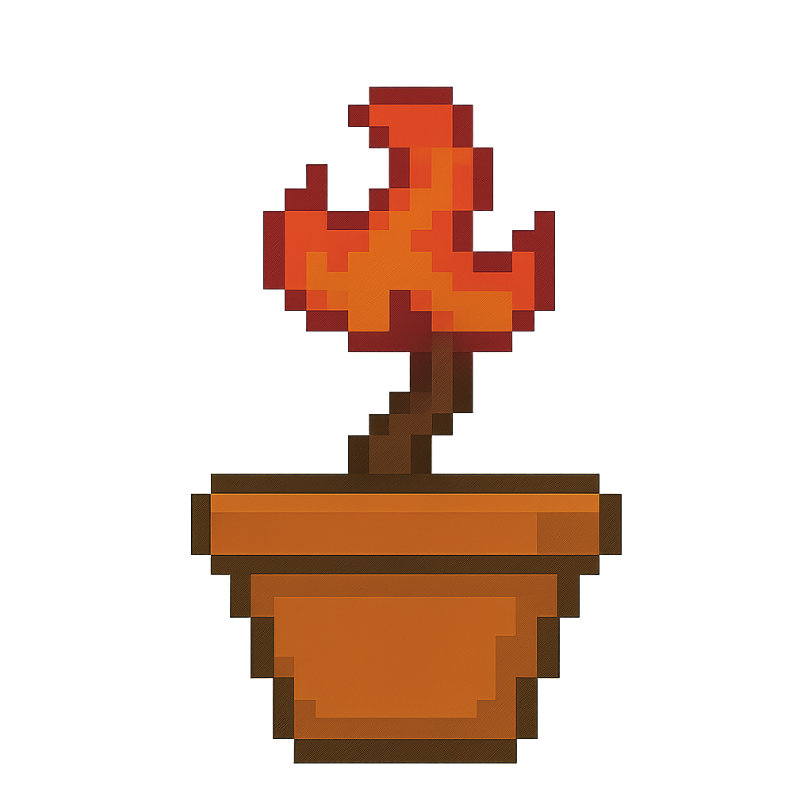
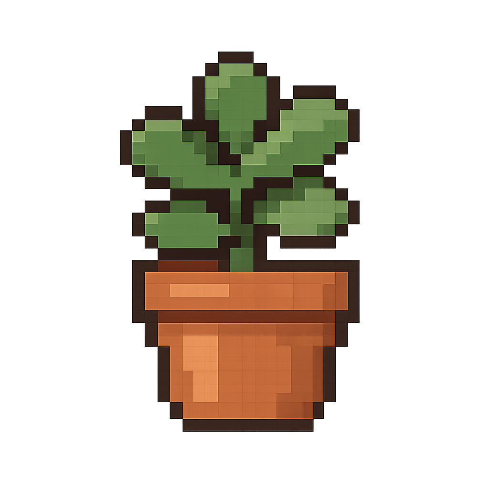
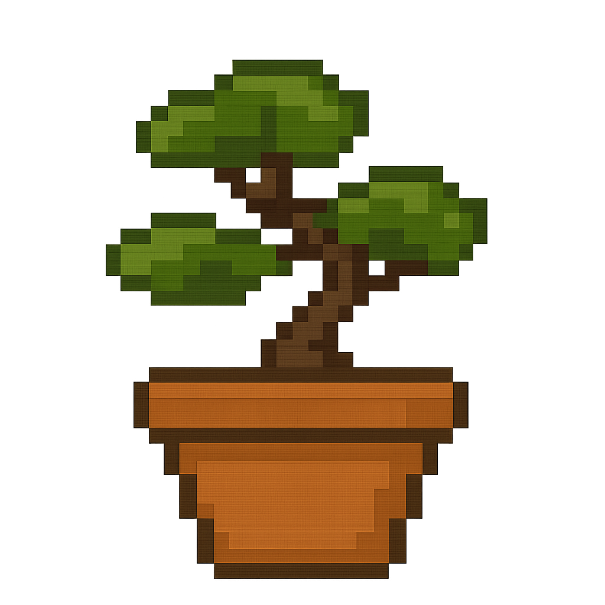
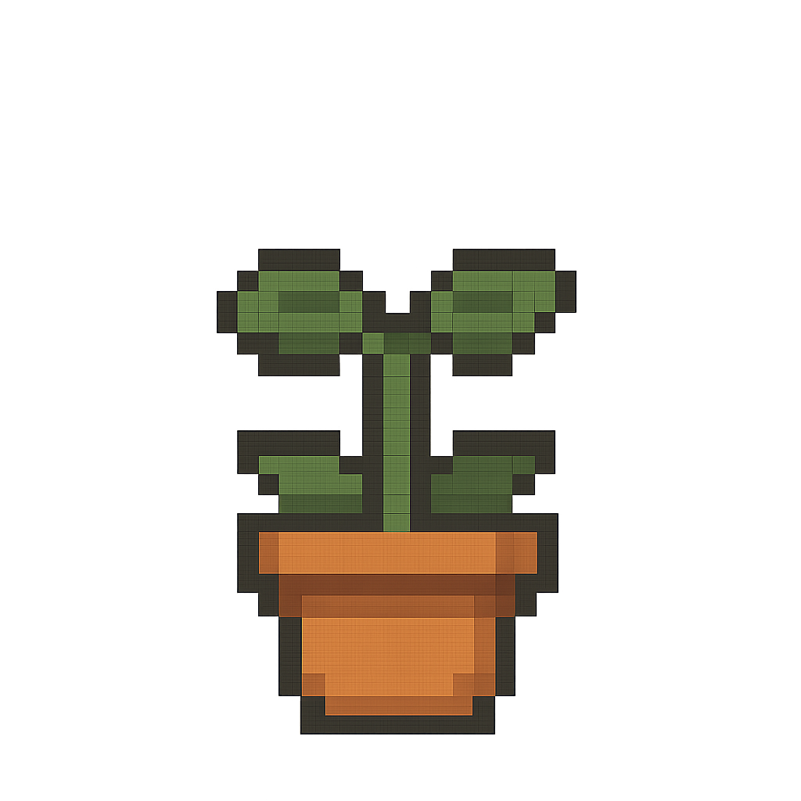
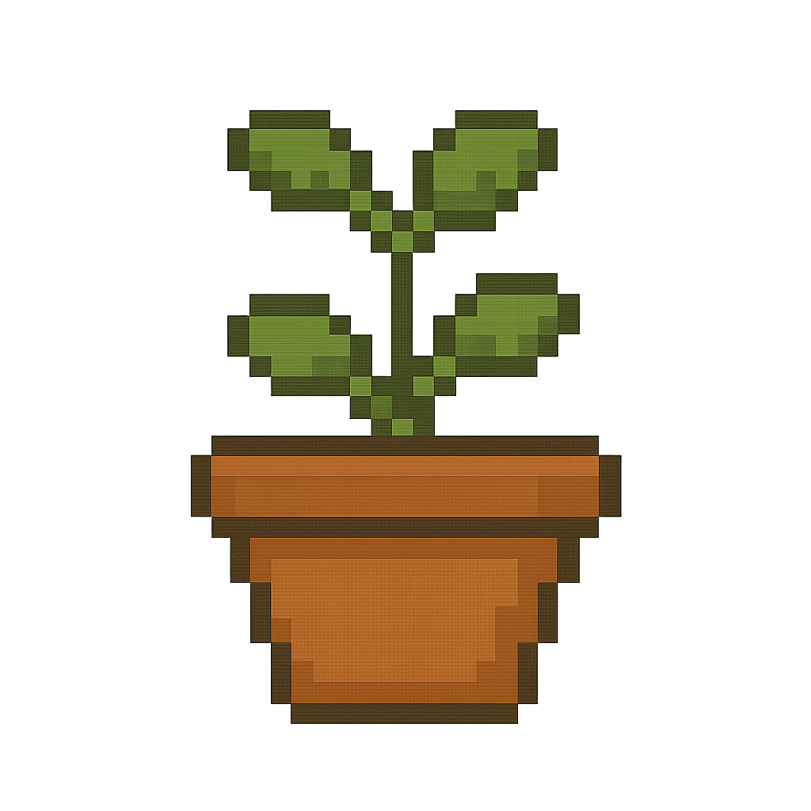
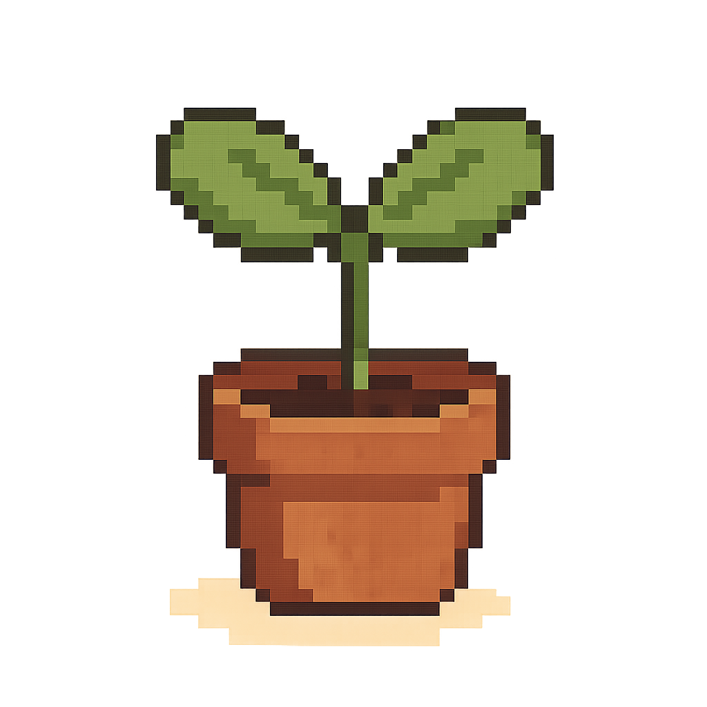
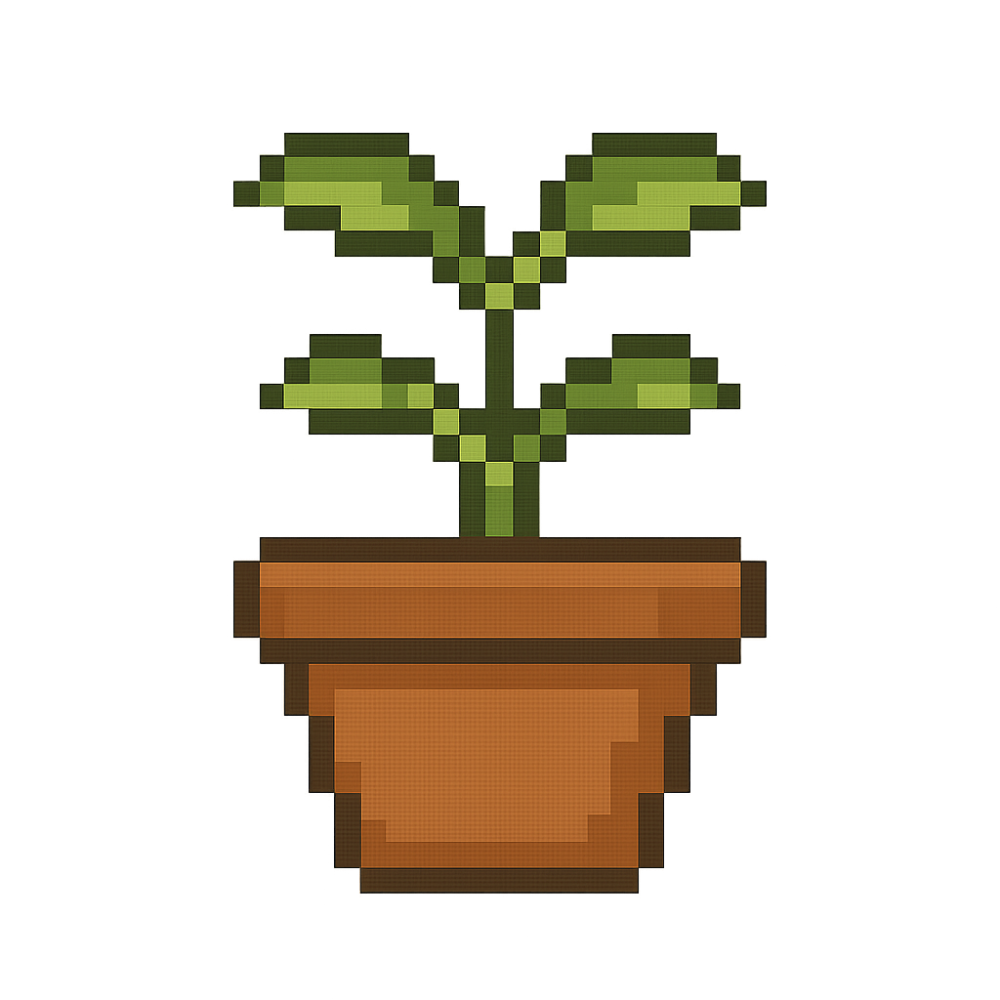
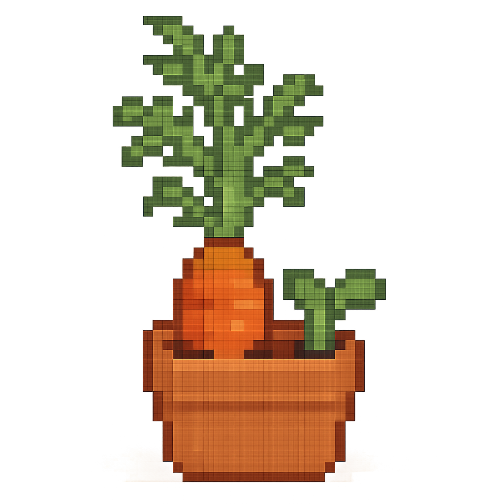

spider plant
- stage of growth: fast grower, matures in 1-2 yrs
- watering needs: light, water abt once a week. let soil dry in between
- sunlight requirements: full sun
- last cared for: watered 9.2
- care type: very easy, beginner-friendly
- note: produces spiderettes (baby plants) u can propagate

flame bonsai
- stage of growth: sapplings → flowers after 5-10 yrs
- watering needs: moderate; keep soil evenly moist but not soggy
- sunlight requirements: full sun, lots of warmth
- last cared for: 9.1
- care type: intermediate (needs patiences and heat)
- note: stunning red-orange blooms once mature

kalanchoe
- stage of growth: compact succulent; blooms after abt 2 years
- watering needs: every 2-3 weeks. let soil dry between waterings
- sunlight requirements: bright, indirect light (can handle some direct tho)
- last cared for: 9.2
- care type: easy, drought-tolerant
- note: produces long lasting clusters of colorful flowers

basil
- stage of growth: fast annual; matures in 60-90 days
- watering needs: frequent but keep soil consistently moist not soggy
- sunlight requirements: full sun abt 6+ hrs in a day
- last cared for: 9.1
- care type: easy, but needs regular harvesting
- note: pinch flower buds to keep leaves tender

pink-syngonium
- stage of growth: matures in 1-2 yrs
- watering needs: weekly, u kno the drill. moist but not soggy
- sunlight requirements: bright, indirect light (too much fades the pink)
- last cared for: 9.2
- care type: easy to moderate. loves humidity
- note: grows bushy at first then starts to vine

brazilian rosewood bonsai
- stage of growth:
- watering needs:
- sunlight requirements:
- last cared for:
- care type:
- note:

sunflower
- stage of growth:
- watering needs:
- sunlight requirements:
- last cared for:
- care type:
- note:

toamatillo-morado
- stage of growth:
- watering needs:
- sunlight requirements:
- last cared for:
- care type:
- note:

zucchini
- stage of growth:
- watering needs:
- sunlight requirements:
- last cared for:
- care type:
- note:

tomatillo verde
- stage of growth:
- watering needs:
- sunlight requirements:
- last cared for:
- care type:
- note:

scarlet nantes carrot
- stage of growth:
- watering needs:
- sunlight requirements:
- last cared for:
- care type:
- note: